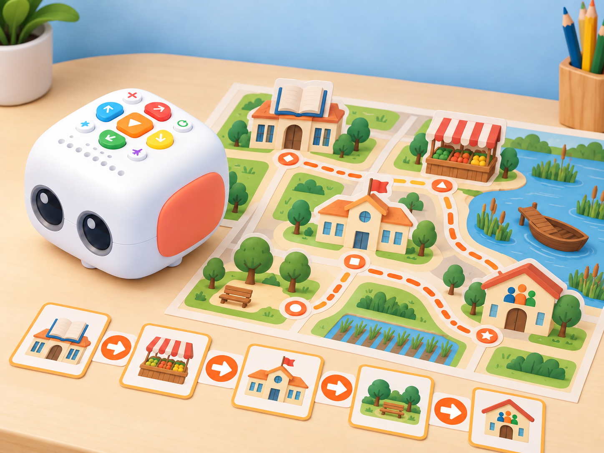

Un barri que es mou amb cura
🏷️ Mobilitat i convivència
🌱 Situació, repte i intenció
🎯 Aprenentatges i vocabulari
- Llegir un mapa de maqueta i descriure itineraris amb orientació, parades i cruïlles.
- Comparar recorreguts amb criteris acordats de llegibilitat i accessibilitat, sense simular experiències personals.
- Programar i depurar una ruta amb Tale-Bot i proposar una millora de disseny de la cruïlla.
- Explicar que el mapa és una representació escolar i no una avaluació de seguretat del carrer real.
🧰 Materials i preparació
Prepareu una graella amb interseccions amples, targetes pròpies de llocs del municipi i peces planes que representen bancs, arbres o obres. Incloeu opcions de transport diverses. No poseu obstacles al pas del robot ni feu l’activitat en una via pública. L’ús de l’adhesiu temàtic de cotxes és opcional i depén de la disponibilitat del centre.
Opció amb els mapes interactius de l’Activity Box
Aquest itinerari propi funciona amb mapa de paper. Si el centre disposa de l’Activity Box compatible, podeu substituir-lo o ampliar-lo amb un mapa interactiu, sense canviar l’objectiu d’accessibilitat:
- Poseu Tale-Bot a l’entrada principal de la cantonada superior esquerra i escolteu la consigna completa.
- Quan la veu indique una entrada secundària, traslladeu el robot a eixe punt. Abans de programar, localitzeu en el mapa el destí, les cruïlles i una ruta possible.
- Programeu i executeu la seqüència. Si el robot arriba a un lloc equivocat, useu l’avís del mapa com una dada per a revisar la ruta, no com una valoració de l’equip.
- En una entrada o punt d’inici, una nova consigna pot substituir l’anterior en moure-hi el robot. Si el robot ja es desplaça i cal interrompre la veu, useu Play; la resta de botons no la cancel·len.
- Useu els mapes interactius i els adhesius interactius per separat. Si canvieu d’un mapa a un tema d’adhesius, reinicieu el robot abans de començar el nou tema. Si la caixa o el mapa de la dotació no coincidix amb aquestes funcions, torneu a la graella pròpia i no pressuposeu la resposta sonora.
Materials, representació i evidències
Feu una graella de caselles grans sobre paper reutilitzable, símbols impresos en alt contrast, un full de llegenda, targetes de gir i una fitxa alternativa per assajar sense robot. Una còpia en relleu o línies amb cordill pot facilitar l'exploració tàctil. Les evidències mínimes són el mapa inicial, les dues rutes, una tira d'ordres amb predicció, el registre d'una depuració i una justificació oral, escrita o pictogràfica de la decisió final.
L’Activity Box és opcional. En la versió descrita per Matatalab inclou cinc mapes interactius de doble cara, un mapa en blanc de doble cara, 32 targetes de comandament i adhesius; comproveu la caixa concreta abans de preparar la sessió, perquè altres paquets del fabricant tenen inventaris diferents.
Useu una escala formativa: encara necessita suport / ho resol amb una pista / ho explica de manera autònoma. Observeu si l'equip manté l'ordre de les instruccions, localitza l'error amb una prova i usa els criteris acordats per comparar opcions. No avalueu suposades necessitats d'accessibilitat de companys ni demaneu a ningú que simule una discapacitat.
📅 Seqüència didàctica
📅 Seqüència d’aprenentatge · quatre sessions
Què fa fàcil seguir una ruta? (25–30 min)
Fase 1 · Activem i prediem
Mostreu un mapa fictici amb biblioteca, plaça, parada i punt d’inici. Cada equip tria una destinació i predigueu com la trobaria algú que no coneix el barri.
Fase 2 · Explorem i construïm
Creeu perfils ficticis —una persona que camina, algú que empeny un cotxet o viatja en cadira de rodes, una criatura acompanyada— com a perspectives de disseny, sense assignar necessitats a l’alumnat ni demanar experiències personals.
Fase 3 · Expliquem i registrem
Parleu de quina informació del mapa ajudaria cada viatge. Trieu dos criteris observables, com nombre de girs i presència d’una zona de pas lliure, i deixeu-los visibles.
Fase 4 · Apliquem i millorem
Reviseu la llegenda del mapa perquè una persona que no coneix el barri puga trobar la destinació. Afegiu un símbol si falta informació per orientar-se.
Fase 5 · Comprovem i reflexionem
Construïm la maqueta i les alternatives (25–30 min)
Fase 1 · Activem i prediem
Trieu biblioteca, plaça, parada i punt d’inici, i prediu per on passaria una ruta directa. Acordeu quina incidència fictícia farà necessari pensar en una alternativa.
Fase 2 · Explorem i construïm
En una graella plana, col·loqueu tres llocs i una intersecció. Afegiu una incidència simulada amb una targeta que es puga llevar; no poseu barreres davant de les rodes.
Fase 3 · Expliquem i registrem
Dibuixeu una ruta directa i una altra que evite la incidència. Seguiu-les amb una fitxa, marqueu els girs i comproveu que la casella d’arribada està definida.
Fase 4 · Apliquem i millorem
Si les cruïlles són difícils d’interpretar, feu més ampla la graella o canvieu el símbol. Comproveu que les peces no bloquegen físicament Tale-Bot.
Fase 5 · Comprovem i reflexionem
Programem, provem i depurem (25–30 min)
Fase 1 · Activem i prediem
En parelles, codifiqueu una ruta directa i una ruta alternativa amb les tecles de moviment. Abans d’iniciar-les, una persona prediu la casella final i l’altra assenyala els girs.
Fase 2 · Explorem i construïm
Introduïu la seqüència al Tale-Bot i demaneu a una altra parella que llija la ruta del mapa. Comproveu l’orientació inicial i el punt de partida.
Fase 3 · Expliquem i registrem
Compareu on acaba el robot amb la predicció. Anoteu l’ordre dels girs, el nombre de passos i el resultat observat.
Fase 4 · Apliquem i millorem
Si no arriba, reviseu l’ordre de cada gir, el nombre de passos o l’orientació. Canvieu una instrucció per prova i registreu quin ajust resol el desajust.
Fase 5 · Comprovem i reflexionem
Explica la proposta i els seus límits (25–30 min)
Fase 1 · Activem i prediem
Intercanvieu mapes entre equips i demaneu a qui els rep que trobe la biblioteca utilitzant només la llegenda. Predigueu quins símbols poden resultar confusos.
Fase 2 · Explorem i construïm
Recolliu les preguntes de l’altre equip i afegiu una millora al mapa o al pas accessible. Compareu les opcions segons distància en caselles, nombre de girs i pas lliure.
Fase 3 · Expliquem i registrem
Cada equip presenta la ruta triada i el criteri que ha prioritzat. Anoteu una cosa que la maqueta pot representar i una que no pot comprovar.
Fase 4 · Apliquem i millorem
Si la classe vol continuar, consulteu amb la docent un mapa públic del municipi i compareu-ne les representacions. No feu una observació de carrer sense planificació i supervisió del centre.
Fase 5 · Comprovem i reflexionem
🧪 Evidències i avaluació
Valoreu que l’alumnat puga ordenar ordres, anticipar el resultat, rectificar un error i comparar dues rutes amb criteris explícits. Guardeu el plànol, els programes i una breu explicació de la decisió. No es pressuposa que la maqueta prove l’accessibilitat o la seguretat d’un carrer real.
♿ Participació, accessibilitat i seguretat
El mapa s'utilitza només en un espai interior pla i sense circulació de persones; la maqueta no representa controls viaris reals. Les observacions en carrer, si es fan, requereixen planificació i supervisió del centre i no formen part d'aquesta activitat. Roteu els rols de cartògraf/a, planificador/a, programador/a i observador/a. Oferiu ruta de taula, pictogrames, lectura oral o participació com a observador. L'adhesiu oficial de cotxes és opcional: la situació funciona amb un plànol en blanc i símbols creats per l'alumnat.
♿ Més d’una manera de participar
Oferiu un mapa amb relleu, poques interseccions i símbols d’alt contrast; permeteu respostes amb gestos, pictogrames o explicació oral. Els rols de planificació, programació, registre i presentació roten, i qualsevol equip pot proposar una ruta alternativa sense competir en temps.
🔗 Referents i adaptació
La temàtica parteix dels adhesius de cotxes de l’Activity Box oficial de Tale-Bot Pro. La guia oficial descriu cinc mapes interactius de doble cara, un mapa en blanc, 32 targetes de comandament, adhesius i les regles de les consignes de veu; l’opció anterior les adapta a una missió pròpia. Aquesta és una ampliació didàctica, no una activitat numerada de les 42 Activity Cards ni una reproducció dels mapes o materials gràfics originals.
Les activitats amb mapa propi continuen disponibles si la caixa no és a la dotació.